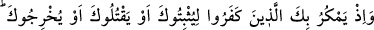

olma ve onunla savaşı elden bırakma!
Bu utancın içinden başımızı nasıl kaldıracağız
Şeytanla barışık, Hak’la savaş yapmaktayız
4. Seni affettiğimi bilmedikçe günahkarları ayıplama!
Amel defterim kara diye ben sarhoşu kınama
Kaza ve kader kalemi başına ne yazdı, kim bilebilir?
5. Cennetime girmedikçe mekrimden emin olma.
Zâhid, sakın Hakkıın mekrinden emin olma!
Çünkü kilise ile manastır arasındaki yol o kadar uzak değil
O halde akıllıya gereken, fânî vücûdunun günahlarını Allah’ın affetmesi, onu cemal ve
celâl nurlarıyla örtmesi için ömrünün sonuna kadar çalışmaktır: Allah katında olana
rağbet ederek kendi elindekilerden vazgeçenler için Allah büyük lütuf sâhibidir. Bu
büyük lütuf ise Allah’ta fânî (fenâ fillah) olduktan sonra yine O’nunla bakâya (bakâ
billah) ermektir. (et-Te’vîlâtü’n- Necmiyye’de böyle geçmektedir)
30. Hani kâfirler seni tutup bağlamak, öldürmek veya yurdundan çıkarmak için
tuzak kuruyorlardı. Onlar (sana) tuzak kurarlarken Allah da (onlara) tuzak
kuruyordu. Çünkü Allah tuzak kuranların en iyisidir.
Bu âyet Kureyş’in Mekke’deyken Peygamberimiz (s.a.v.)’e kurdukları tuzakları
hatırlatmakta ve kendisini müşriklerin tuzağından kurtaran ve onlara galip kılan Allah’a
şükretmeye çağırmaktadır.
İbn İshâk şöyle anlatır: “Peygamberimiz (s.a.v.)’in kendilerinin ve beldelerinin
dışında taraftarları ve ashâbı olduğunu, ashabının Mekke’den çıkarak onlara
katıldıklarını görünce müşrikler, müslümanların sığınacak bir yer bulup genişliğe
kavuştuklarını anlayarak Peygamber (s.a.v.)’in Mekke’den çıkmasından ve Medîne’ye
varıp oradaki inananları kendileriyle savaşmak üzere bir araya getirmesinden endişe
duymaya başladılar. Derhal Dâru’n-nedve’de toplandılar.
Dâru’n-nedve, Kusay b. Kilâb’ın Mekke’de yaptırdığı ve Kureyşlilerin işlerini karara
bağladıkları evin ismidir. Kureyşlilerin meselelerini müşavere için burada toplanmaları
sebebiyle bu adı almıştır. İşte Kureyşliler bu evde toplanıp Peygamberimiz (a.s.)’ın
durumu hakkında istişare ettiler. İçlerinde Ebû Rebîa’nın iki oğlu Utbe ve Şeybe, Ebû
Cehil, Ebû Süfyan, Nadr b. Hâris, Ebu’l-Buhterî b. Halef, Zem‘a b. Esved gibi
Kureyş’in önde gelenleri vardı.